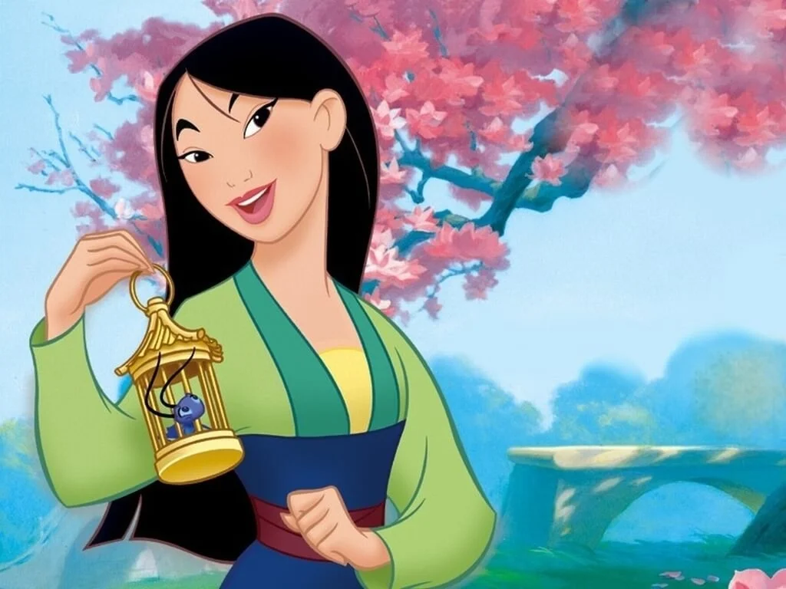
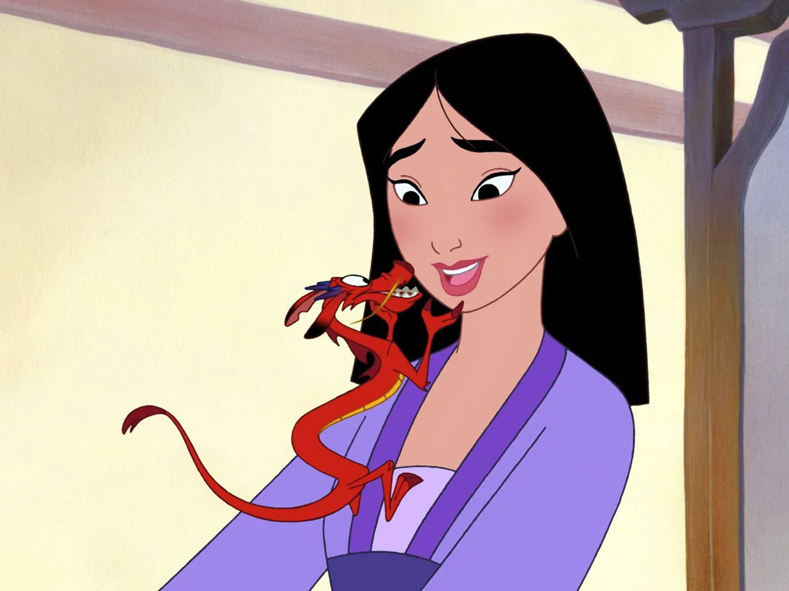
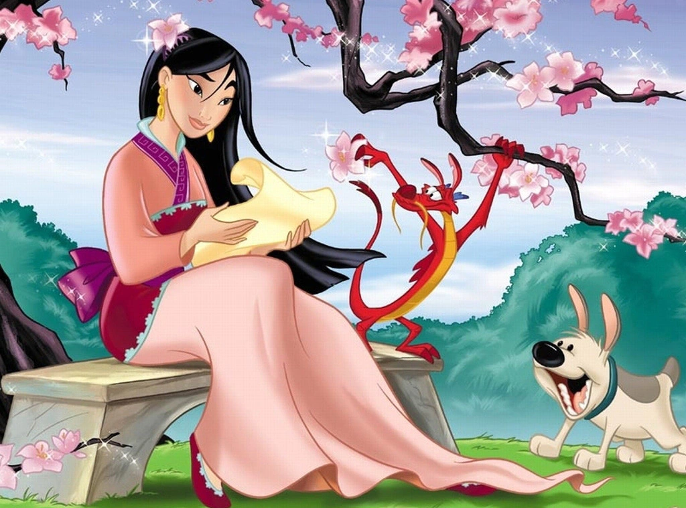

Mulan
"Mulan" es la aventura épica de una intrépida joven que se disfraza de hombre para luchar contra los invasores del norte que atacan China. Hua Mulan es la hija mayor de un condecorado guerrero y es enérgica, decidida y tremendamente rápida. Cuando el Emperador publica un decreto según el cual un hombre en cada familia debe servir en el Ejército Imperial, ella decide tomar el lugar de su padre enfermo bajo el nombre de Hua Jun, convirtiéndose en uno de los guerreros más famosos de China.
- Hua Mulánla valiente y enérgica hija mayor de un condecorado guerrero, es la niña de los ojos de su padre. El Emperador moviliza a sus tropas para combatir el ataque de los invasores del Norte así que Mulán se hace pasar por un hombre para sustituir a su padre enfermo.
- Emperadorpromulga un decreto según el cual un hombre de cada hogar debe servir en el Ejército Imperial y luchar contra los invasores del Norte que acechan peligrosamente. El Emperador fue en su tiempo un guerrero temible y está decidido a aplastar las fuerzas de Rouran.
- Comandante Tunges una figura trascendental para Hua Mulán, ya que además de liderar el batallón del Ejército Imperial del Emperador, se convierte también en su mentor.
- Bori Khanes el guerrero Rouran que lidera la Invasión del Norte. Le mueve una vendetta personal y no se detendrá ante nada en sus ansias de venganza.
- Xianniangun aliado de Böri Khan y de las fuerzas de Rouran que posee poderes especiales, tiene más en común con su adversaria Hua Mulán de lo que ella hubiera imaginado jamás.
- Cheng Honghuies un soldado compañero de Hua Jun; tiene confianza en sí mismo, es guapo y ambicioso, y no tarda en convertirse en uno de los aliados más importantes de Hua Jun.
- Skatches un estafador que, junto con su socio Ramtish, roba a Hua Mulán cuando ésta lleva su disfraz de guerrero. Los detienen y los condenan a muerte pero los indultan a petición de Mulán y acaban uniéndose a la resistencia.


